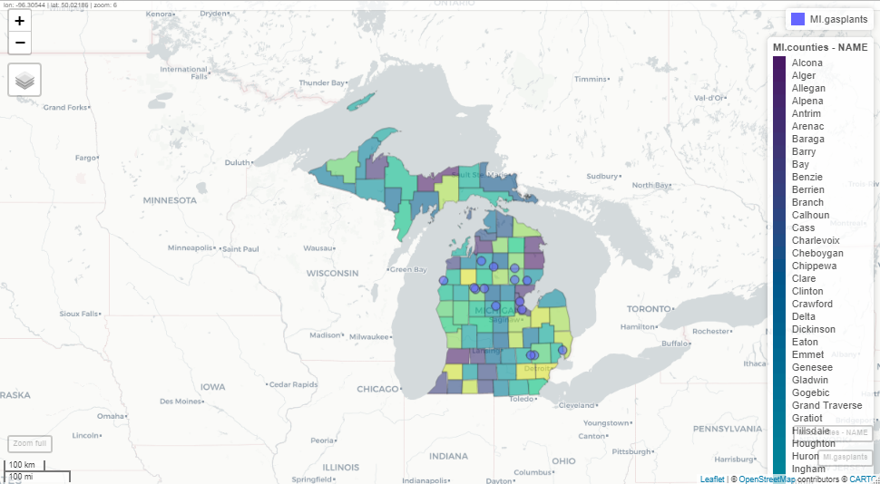

library(sf)
library(mapview)
library(tigris)
library(tidycensus)
library(tidyverse)
library(tmaptools)Geospatial with R
Required Reading
- This page.
Guiding Questions
- What are the building blocks of geospatial data?
- How do we handle uniquely geospatial properties like distance or spatial correlation?
Geospatial in R
We will need a handful of new packages for our introduction to geospatial analysis in R. The primary package we will interact with is the sf package. sf stands for “simple features.” It has become the standard for geospatial work in R, and relies on the rgeos and rgdal libraries (which are themselves R compilations of the geos and gdal libraries). Documentation of sf can be found here.
We will also use the mapview package, as well as the tmaptools package. Plus, we’ll use tigris to get state boundaries and tidycensus to pull down census maps. Install those, and any of the many dependencies that they also install.
Vector vs. Raster
There are two ways of storing 2-D mapped spatial data, raster and vector. A vector representation of a 2-D shape is best described as an irregular polygon with points defining vertices. A square plotted in cartesian coordinates is a vector representation. Conversely, a raster image is a grid of cells where each cell is defined as “in” or “out” of the square. Most computer graphics like JPEG and TIFF are raster graphics and each pixel has an assigned color. To make a raster image of a blue square, we’d make a big grid of pixels, and then color some blue based on their location. To make a blue square in vector form, we’d record just the location of the corners and add instructions to color inside the polygon formed by those corners blue.

Vectors are scalable. Rasters are not
Rasters are great for detail, like pixels in a picture, but they do not scale up very well. Vectors are great for things that do need to scale up. They are also smaller and easier to work with when they aren’t trying to replicate photo-realistic images. Vectors can handle curves by recording the properties of the curve (e.g. bezier curves), while rasters have to approximate curves along the grid of cells, so if you want a smooth curve, you need lots of cells.
Geospatial work is almost always done in vectors because (1) it is easier to store data as vectors, and (2) it is easier to manipulate, project, intersect, or connect vector points, lines, and polygons.
We are going to work entirely with vectors today.
Vectors: points, lines, and polygons
Most everything we would want to map can be represented as a point, a line, or a polygon. Points could be the location of power plants in the US, or the location of COVID cases, or the location of major intersections. Lines could be the location of train tracks, the shortest distance between someone’s house and the nearest restaurants, or a major road. Polygons could be county boundaries, landowner’s lot lines, or bodies of water.
We can start by making some points, then turning them into a polygon. We’ll just use arbitrary coordinates for now, but will move into GPS latitude-longitude coordinates shortly. We’ll use st_multipoint to create our points object. It takes a numeric matrix only.
myPoints = tribble(~X, ~Y,
0, 0,
0, 4,
1, 4,
1, 1,
.5, 0,
0, 0)
myPoints = st_multipoint(as.matrix(myPoints))
plot(myPoints)
Making polygons
We’ve begun making our first spatial object! Now, we can turn it into a polygon under one condition: the polygon has to “close” in order for R to know which side is the inside. In myPoints, the last point is identical to the first point, so R will “close” it:
plot(st_polygon(list(myPoints)), col = 'darkgreen')
That’s just one polylgon. Let’s add another one. When we created the polygon, we put the points object, myPoints, into a list. If we have a list of, say, two points objects, then we’ll get two polygons:
myPoints2 = tribble(~X, ~Y,
1,1,
2,1,
2,2,
1,2,
1,1)
myPoints2 = st_multipoint(as.matrix(myPoints2))
myPolygons = st_polygon(list(myPoints, myPoints2))
plot(myPolygons, col = 'lightblue')
Now we can see two polygons. Looking at the structure of the polygons:
str(myPolygons)List of 2
$ : 'XY' num [1:6, 1:2] 0 0 1 1 0.5 0 0 4 4 1 ...
..- attr(*, "dimnames")=List of 2
.. ..$ : NULL
.. ..$ : chr [1:2] "X" "Y"
$ : 'XY' num [1:5, 1:2] 1 2 2 1 1 1 1 2 2 1
..- attr(*, "dimnames")=List of 2
.. ..$ : NULL
.. ..$ : chr [1:2] "X" "Y"
- attr(*, "class")= chr [1:3] "XY" "POLYGON" "sfg"Notice that one of the classes is sfg. This is a sf package-defined spatial object.
Getting points on a plot
One little-known trick in R is super helpful in spatial work. If you plot(myPolygons) in your own R-studio console (so it appears in your “Plots” pane, not knit into your document), you can use click(n) to interactively get \(n\) spatial points in the coordinate system of your plot.
myClicks = click(n = 3)
myClicks = rbind(myClicks, myClicks[1,]) # copy the first point to the last point to "close"
myNewPolygon = st_polygon(list(st_multipoint(myClicks)))
plot(myPolygons, col = 'lightblue')
plot(myNewPolygon, col = 'green', add=T)
Making lines
We could also create a line with our points. I’ll leave off the one point we added to “close” the polygon. Note that the line is colored blue, not the (uncompleted) polygon.
myLine = st_linestring(myPoints[1:4,])
plot(myLine, col = 'blue')
Reading spatial data
While it’s fun to draw our own shapes (caution: my definition of fun \(\neq\) your definition of fun), we’re probably most interested in finding and using existing spatial data. Let’s talk briefly about the types of spatial data out there:
- Shapefiles
- Shapefiles are not actually single files - they’re usually 4-6 files with similar names and different suffixes like .dbf, .shx, etc. This is because the shapefile format kind of pre-dates our current way of thinking of file storage. The most common program for reading or making shapefiles is ESRI’s ArcGIS. It is expensive, cumbersome, and some may say bloated. Our goal in this section is to be able to rescue shapefiles from the clutches of ArcGIS and open them in R
- GEOJSON
- JSON is a way of structuring text data (like a .csv) but with the potential for nests in the data (like our
listobject) where each nest has a different data structure. GEOJSON pairs this with WKT or Well-Known Text representations of coordinates and takes care of making sure that each observation in the JSON data has a corresponding polygon in WKT coordinates.
- JSON is a way of structuring text data (like a .csv) but with the potential for nests in the data (like our
- KML
- Bare-bones storage of coordinates and basic data
- .RDS
- Okay, this is just R’s native data type for storage, but it’s really helpful for storing
sfobjects
- Okay, this is just R’s native data type for storage, but it’s really helpful for storing
- Comma separated values (.csv)
- Just like the CSV’s we’ve been using, but with Latitude and Longitude columns. Only works for points (one point per .csv line), but is very commonly found. We can use
st_as_sfto tell R which columns are the latitude and longitude.
- Just like the CSV’s we’ve been using, but with Latitude and Longitude columns. Only works for points (one point per .csv line), but is very commonly found. We can use
We can open and use any one of these filetypes. I will cover Shapefiles and GEOJSON as the latter has become a very popular way of sharing spatial datasets.
Where to find spatial data
Spatial data is all around us! Try searching google for a topic + “spatial shapefile”. One of my favorite sources for spatial data is the DHS HIFLD Open database, which has lots of government datasets that are well-organized by category. Click through, choose the “open” database, and when you find something you like, click the “Download” button. If there is a GEOJSON or KML file available, right-click and copy the link address, or click on full details and scroll down to I want to…View API Resources and copy the GEOJSON link. Then, use that with st_read(). On many maps (including this one), the GeoJSON link is shown under the API drop-down. Use GeoJSON over KML as some systems have issues importing the data fields in KML.
Loading the data
We’ll use the sf package’s st_read to open spatial data. Here, I’m loading the Natural Gas Processing Plants data from the Energy section of HIFLD. I’m using the GeoJSON option, which st_read() knows how to handle:
gasplants = st_read('https://services7.arcgis.com/FGr1D95XCGALKXqM/arcgis/rest/services/NaturalGas_ProcessingPlants_US_EIA/FeatureServer/23/query?outFields=*&where=1%3D1&f=geojson') %>%
dplyr::select(name = Plant_Name)Reading layer `OGRGeoJSON' from data source
`https://services7.arcgis.com/FGr1D95XCGALKXqM/arcgis/rest/services/NaturalGas_ProcessingPlants_US_EIA/FeatureServer/23/query?outFields=*&where=1%3D1&f=geojson'
using driver `GeoJSON'
Simple feature collection with 478 features and 18 fields
Geometry type: POINT
Dimension: XY
Bounding box: xmin: -120.4329 ymin: 26.42119 xmax: -78.6591 ymax: 48.87366
Geodetic CRS: WGS 84head(gasplants)Simple feature collection with 6 features and 1 field
Geometry type: POINT
Dimension: XY
Bounding box: xmin: -111.9598 ymin: 31.29948 xmax: -95.51805 ymax: 48.73838
Geodetic CRS: WGS 84
name geometry
1 50 Buttes Processing Facility POINT (-105.7778 43.85235)
2 Ajax Plant POINT (-100.1163 35.5464)
3 Alamo POINT (-95.51805 31.29948)
4 Allison Gas Plant POINT (-100.1451 35.61864)
5 Aloe Ventures POINT (-111.9598 48.73838)
6 Altamont Gas Plant POINT (-110.329 40.35807)The sf data type holds both the data (which here is just the name of the plant) and the “geometry”, which are the points. It’s tidy data - one row is one observation of one plant, and each row has a set of coordinates telling us where to find the plant.
We can use ggplot with geom_sf() to plot these points. They’re just scattered across the country and we don’t automatically get a background map, but here are the points
ggplot(gasplants) + geom_sf() + theme_minimal()
Well, we’re missing some context here – we can kind of make out the point of Texas down there, but it’s hard to tell anything about where these plants are located. Let’s use tigris to get a map of the US, then plot it plus the points. Note we use different data = in each of the geom_sf() calls:
US <- tigris::states(cb = TRUE, progress_bar = FALSE) # tigris maps
ggplot() + geom_sf(data = US, col = 'gray50') +
geom_sf(data = gasplants) + theme_minimal()
Getting there. The problem now is that the tigris data covers all US territories, which are really spread out! Let’s drop down to just Michigan. We can use good old filter just like with regular data:
MI = tigris::states(cb = TRUE) %>% dplyr::filter(STUSPS=='MI')
ggplot() + geom_sf(data = MI, col = 'gray50') +
geom_sf(data = gasplants) + theme_minimal()
Well, now we have a different problem. We want to have only the gasplants that are over the state of Michigan. That requires a spatial join. Luckily, our tidyverse syntax works pretty seamlessly on sf objects. First, we have to take care of a little issue with spatial data. The projection
Projections, briefly
The projection for spatial data is the translation from a 3-D object (e.g. the globe) to a 2-D space (a map, or the cartesian x-y coordinates of our screen). This is no simple matter! There are entire PhD programs dedicated to forming and processing projections and datum (which refer to the shape of the globe, which is not actually round). It can all be a nightmare. Worst of all, projections determine the definition of your coordinates, so you may be at -81 latitude, +30 longitude, but in another projection, you might be 1245349m above some reference point, and -2452849m to the left of that point. Projections define the distance along the X and Y axis, the scale of the coordinates, and a lot of other stuff about your 2-D polygons.
Luckily, over the last few years, very smart people have been working on regularizing “projections”. Now, we really need to know three things:
- The projection of your data’s coordinates when you read it in
- The projection you want your data to be in when you map it
- The projection of other spatial data you may want to combine.
Importing projected data
GEOJSON, shapefiles, and KML files usually come with embedded projections stored as EPSG numbers like ‘4326’ (incidentally, ‘4326’ is the usual projection for GPS coordinates). Thus, the first one is usually already taken care of. If your data doesnt have a PROJ4 or EPSG number but the coordinates are all between -180 and +180, it’s likely in EPSG=4326. If none of those, then the data creator should have metadata stating the proejction. It might take some googling and some trial and error.
For mapping, you might need to transform your data between projections (or “reproject” it, same thing). We use st_transform for this. We only need to give R the EPSG (Geodetic Parameter Dataset) of the projection you want to end up in. As long as it’s already in a known projection, R can re-project it. The projection is refered to by the Coordinate Reference System (CRS). st_crs will tell us the projection (EPSG number and a lot more) of any spatial object. If they do not match, then R will give an error or, worse, plot them on totally different scales - sometimes you end up with points from the US landing in the middle of the Indian Ocean! In fact, look back at our map of gas plants and the US.
st_crs(gasplants)Coordinate Reference System:
User input: WGS 84
wkt:
GEOGCRS["WGS 84",
DATUM["World Geodetic System 1984",
ELLIPSOID["WGS 84",6378137,298.257223563,
LENGTHUNIT["metre",1]]],
PRIMEM["Greenwich",0,
ANGLEUNIT["degree",0.0174532925199433]],
CS[ellipsoidal,2],
AXIS["geodetic latitude (Lat)",north,
ORDER[1],
ANGLEUNIT["degree",0.0174532925199433]],
AXIS["geodetic longitude (Lon)",east,
ORDER[2],
ANGLEUNIT["degree",0.0174532925199433]],
ID["EPSG",4326]]st_crs(MI)Coordinate Reference System:
User input: NAD83
wkt:
GEOGCRS["NAD83",
DATUM["North American Datum 1983",
ELLIPSOID["GRS 1980",6378137,298.257222101,
LENGTHUNIT["metre",1]]],
PRIMEM["Greenwich",0,
ANGLEUNIT["degree",0.0174532925199433]],
CS[ellipsoidal,2],
AXIS["latitude",north,
ORDER[1],
ANGLEUNIT["degree",0.0174532925199433]],
AXIS["longitude",east,
ORDER[2],
ANGLEUNIT["degree",0.0174532925199433]],
ID["EPSG",4269]]gasplants from HIFLD is in EPSG: 4326, the map of MI is in EPSG: 4269. We can use st_transform on the gasplants data, which will reproject the points (and won’t change the data at all). The data won’t be any different, and the points won’t look too much different
gasplants = gasplants %>%
st_transform(crs=4269)
ggplot(gasplants) + geom_sf() + theme_minimal()
But in a bit, when we spatially join, we’ll avoid an error.
Importing unprojected data
Sometimes, we have data only in .csv format, but with X and Y coordinates (e.g. Longitude and Latitude). To import this data, we do the following:
- Read in from .csv, .xls, etc.
- Determine the CRS of the data (usually 4326 for gps coordinates)
- Set the spatial coordinates and CRS
We know how to do the first, and the 2nd and 3rd are done in one step. We’ll make a data.frame of city names and use the tmaptools package’s geocode_OSM to get the latitudes and longitudes of the city centers. This function uses open-source Open Street Maps instead of the google API (which is used by ggmap). This way, we don’t need an API key.
ourCities = geocode_OSM(c('Detroit','Lansing','Grand Rapids','Kalamazoo','Traverse City','Marquette')) %>%
select(City = query, lat = lat, lon = lon)
head(ourCities) City lat lon
1 Detroit 42.33155 -83.04664
2 Lansing 42.73383 -84.55463
3 Grand Rapids 42.96324 -85.66786
4 Kalamazoo 42.29171 -85.58723
5 Traverse City 44.76065 -85.61660
6 Marquette 46.44815 -87.63059Since these are GPS-type coordinates, we are going to assume the CRS is EPSG=4326. Longitude is the “x” axis, and latitude is the “y” axis.
ourCities.spatial = st_as_sf(ourCities, coords = c('lon','lat'), crs = 4326)
head(ourCities.spatial)Simple feature collection with 6 features and 1 field
Geometry type: POINT
Dimension: XY
Bounding box: xmin: -87.63059 ymin: 42.29171 xmax: -83.04664 ymax: 46.44815
Geodetic CRS: WGS 84
City geometry
1 Detroit POINT (-83.04664 42.33155)
2 Lansing POINT (-84.55463 42.73383)
3 Grand Rapids POINT (-85.66786 42.96324)
4 Kalamazoo POINT (-85.58723 42.29171)
5 Traverse City POINT (-85.6166 44.76065)
6 Marquette POINT (-87.63059 46.44815)Now we have the point geometries! We can map this:
ggplot() +
geom_sf(data = MI, fill = 'gray90') +
geom_sf(data = ourCities.spatial, col = 'blue') +
theme_minimal()
Mis-projected data
Let’s see a bad example that assumes the wrong projection when importing ourCities.spatial:
ourCities.spatial.bad = st_as_sf(ourCities, coords = c('lon','lat'), crs = 4000)
ggplot() +
geom_sf(data = MI, fill = 'gray90') +
geom_sf(data = ourCities.spatial.bad, col = 'blue') +
theme_minimal()
Ope! That sure doesn’t look right. The wrong projection can derail a project. Luckily, most shapefiles we find in the wild have the projection (CRS) attached. Now you know what a bad one looks like. Back to our correctly-projected data.
Spatial merges
Combining spatial data is the strength of geospatial analysis. We have our map of MI, and we have out points. Let’s “merge” the points to the map, meaning let’s connect the elements in our map (the state of MI) to the elements in our points (gas plants). This is a point-to-polygon merge.
Point-to-polygon merges
We’ll use st_join to produce an inner join, so we keep only those points that are “in” (spatially) the state of Michigan. I’m specifying join = st_intersects though this is the default. Note that all the points that remain in the merged MI.gasplants are in Michigan, and note that all the data columns from MI are now in gasplants. We’ll use a county map of MI here so we will have the county data for each county containing a gas plant.
MI.counties = counties(state = 'MI', cb = TRUE, progress_bar = FALSE)
MI.gasplants = gasplants %>%
st_transform(st_crs(MI.counties)) %>%
st_join(MI.counties, left = FALSE,
join = st_intersects)
head(MI.gasplants)Simple feature collection with 6 features and 13 fields
Geometry type: POINT
Dimension: XY
Bounding box: xmin: -86.32218 ymin: 43.79656 xmax: -84.01813 ymax: 44.69001
Geodetic CRS: NAD83
name STATEFP COUNTYFP COUNTYNS AFFGEOID GEOID
20 Aztec Manistee 26 101 01622993 0500000US26101 26101
28 Beaver Creek 26 039 01622962 0500000US26039 26039
148 Fraser 8 26 017 01622951 0500000US26017 26017
162 Goose Lake Gas Plant 26 133 01623009 0500000US26133 26133
212 Kalkaska Gas Processing 26 079 01622982 0500000US26079 26079
268 Marion Gas Plant 26 133 01623009 0500000US26133 26133
NAME NAMELSAD STUSPS STATE_NAME LSAD ALAND AWATER
20 Manistee Manistee County MI Michigan 06 1404616367 1912438858
28 Crawford Crawford County MI Michigan 06 1441108421 17887265
148 Bay Bay County MI Michigan 06 1145834939 487713370
162 Osceola Osceola County MI Michigan 06 1466674406 17425113
212 Kalkaska Kalkaska County MI Michigan 06 1449729130 28020186
268 Osceola Osceola County MI Michigan 06 1466674406 17425113
geometry
20 POINT (-86.32218 44.26337)
28 POINT (-84.818 44.559)
148 POINT (-84.01813 43.79656)
162 POINT (-85.4091 44.1106)
212 POINT (-85.19667 44.69001)
268 POINT (-85.09891 44.08532)Now, we can plot the counties map with the gasplants over it. We can even use aes(...) to fill the counties:
ggplot() +
geom_sf(data = MI.counties, aes(fill = NAME), show.legend = F) +
geom_sf(data = MI.gasplants) +
theme_minimal() 
Huh. Most gas plants in Michigan are to the north of here. Interesting.
Mapview
Sometimes, we want to be able to zoom in and out. ggplot is static, so that won’t work too well. Thanks to the leaflet engine, the mapview packages is stellar for exploration of spatial data. You can specify zcol = Name if you want to color by the Name field. I can’t embed this in the website, but you can run this at home. It will appear in the “Viewer” pane, not in the “Plots” pane. Unlike the static image here, you will be able to zoom and pan.
mapview(MI.gasplants)
In an actual mapview window (not this static image here), clicking on the points or polygons will bring up a pop-up of the data for that row. Mapview is very useful for exploring your spatial data. It is not useful for presenting your data. Please, never use mapview as an output from a markdown code chunk. Use it for exploring, then use geom_sf() to present your analysis.
While Mapview has many features that you will likely find interesting, one of the more useful features is that you can set the display color, which helps for data exploration.
mapview(MI.counties, zcol = 'NAME')This will set each county in Michigan to a different color (using the viridis colors). Another very useful feature of mapview is that you can layer plots with +. Again, I’m including a static image. Using this command in Rstudio will open an interactive map:
mapview(MI.gasplants) + mapview(MI.counties, zcol = 'NAME')
Polygon-to-polygon merges
The gas plants and state merge, above, was very simple because points are always either within or not within a polygon. Worst that can happen is some of your points are not over any polygon at all (resulting in NA values). But what if you’re merging polygons to polygons?
First, let’s load some (overlapping) polygons. We can load up all of our states again (dropping the territories). We’ll also use a map of watersheds (which cross state boundaries). This is the HUC-4 map of the Rockies from the US Geological Survey. The HUC-4 is a definition of a watershed where the area of the HUC-4 is the area drained by a major tributary:
US = states(cb=TRUE) %>%
dplyr::filter(!STUSPS %in% c('PR','GU','VI','MP','AS','AK','HI'))
HUC4 = st_read('https://opendata.arcgis.com/datasets/7f8632f3e3114623b4f5c8f97d935dca_1.kml') %>%
st_transform(st_crs(US)) %>%
dplyr::mutate(randomData = rpois(n(), 20))Reading layer `USGS_NHD_Hydrologic_Units__HUCs_' from data source
`https://opendata.arcgis.com/datasets/7f8632f3e3114623b4f5c8f97d935dca_1.kml'
using driver `KML'
Simple feature collection with 12 features and 2 fields
Geometry type: POLYGON
Dimension: XY
Bounding box: xmin: -121.5779 ymin: 31.5082 xmax: -109.7625 ymax: 45.25827
Geodetic CRS: WGS 84ggplot() +
geom_sf(data = US, col = 'gray50') +
geom_sf(data = HUC4, aes(fill = Name), show.legend = FALSE) +
theme_minimal()
These watersheds clearly overlap state boundaries. So what happens if we merge them? sf will create a new obsveration (row) for every HUC-4 / State combination
poly.merge = HUC4 %>%
st_join(US, left = TRUE)
head(poly.merge)Simple feature collection with 6 features and 12 fields
Geometry type: POLYGON
Dimension: XY
Bounding box: xmin: -115.7061 ymin: 31.5082 xmax: -111.5061 ymax: 39.30285
Geodetic CRS: NAD83
Name Description randomData STATEFP STATENS
1 Lower Colorado 15 32 01779793
1.1 Lower Colorado 15 06 01779778
1.2 Lower Colorado 15 04 01779777
2 Lower Colorado-Lake Mead 22 49 01455989
2.1 Lower Colorado-Lake Mead 22 32 01779793
2.2 Lower Colorado-Lake Mead 22 04 01779777
AFFGEOID GEOID STUSPS NAME LSAD ALAND AWATER
1 0400000US32 32 NV Nevada 00 284537290201 1839636284
1.1 0400000US06 06 CA California 00 403671756816 20293573058
1.2 0400000US04 04 AZ Arizona 00 294363973043 855871553
2 0400000US49 49 UT Utah 00 213355072799 6529973239
2.1 0400000US32 32 NV Nevada 00 284537290201 1839636284
2.2 0400000US04 04 AZ Arizona 00 294363973043 855871553
geometry
1 POLYGON ((-114.6233 36.0304...
1.1 POLYGON ((-114.6233 36.0304...
1.2 POLYGON ((-114.6233 36.0304...
2 POLYGON ((-115.0786 39.3005...
2.1 POLYGON ((-115.0786 39.3005...
2.2 POLYGON ((-115.0786 39.3005...Now, every HUC-4 like “Lower Colorado” has multiple observations, one for each STUSPS that it touches. When we plot it, though, each of those observations are still attached to the same HUC-4 polygon. Technically, R is plotting the same HUC multiple times (once for each state) on top of each other, so we don’t see them. This is the equivalent of merging your data in a way that duplicates observations.
ggplot(poly.merge) + geom_sf() +
theme_minimal()
We have another option in our join - we can ask st_join to keep just the largest:
poly.merge.largest = HUC4 %>%
st_join(US, left = TRUE, largest = TRUE)
head(poly.merge.largest)Simple feature collection with 6 features and 12 fields
Geometry type: POLYGON
Dimension: XY
Bounding box: xmin: -121.255 ymin: 31.5082 xmax: -111.5061 ymax: 42.3448
Geodetic CRS: NAD83
Name Description randomData STATEFP STATENS
1 Lower Colorado 15 04 01779777
2 Lower Colorado-Lake Mead 22 04 01779777
3 Northern Mojave-Mono Lake 26 06 01779778
4 Central Nevada Desert Basins 24 32 01779793
5 North Lahontan 18 06 01779778
6 Black Rock Desert-Humboldt 14 32 01779793
AFFGEOID GEOID STUSPS NAME LSAD ALAND AWATER
1 0400000US04 04 AZ Arizona 00 294363973043 855871553
2 0400000US04 04 AZ Arizona 00 294363973043 855871553
3 0400000US06 06 CA California 00 403671756816 20293573058
4 0400000US32 32 NV Nevada 00 284537290201 1839636284
5 0400000US06 06 CA California 00 403671756816 20293573058
6 0400000US32 32 NV Nevada 00 284537290201 1839636284
geometry
1 POLYGON ((-114.6233 36.0304...
2 POLYGON ((-115.0786 39.3005...
3 POLYGON ((-118.7594 38.3208...
4 POLYGON ((-114.7211 41.2410...
5 POLYGON ((-120.1835 41.9743...
6 POLYGON ((-117.9693 42.3430...Now, there is only one observation per HUC-4, and it corresponds to the state that has the most overlap area-wise. For Lower Colorado, Arizona has the most overlap. There are lots of things besides st_intersect we can use to call two things “joined”. ?st_join tells you about them. For instance, we can use join = st_covers and we will only get a merge when HUC-4 completely covers the state.
HUC4 %>%
st_join(US, left = TRUE, join = st_covers) %>%
head()Simple feature collection with 6 features and 12 fields
Geometry type: POLYGON
Dimension: XY
Bounding box: xmin: -121.255 ymin: 31.5082 xmax: -111.5061 ymax: 42.3448
Geodetic CRS: NAD83
Name Description randomData STATEFP STATENS AFFGEOID
1 Lower Colorado 15 <NA> <NA> <NA>
2 Lower Colorado-Lake Mead 22 <NA> <NA> <NA>
3 Northern Mojave-Mono Lake 26 <NA> <NA> <NA>
4 Central Nevada Desert Basins 24 <NA> <NA> <NA>
5 North Lahontan 18 <NA> <NA> <NA>
6 Black Rock Desert-Humboldt 14 <NA> <NA> <NA>
GEOID STUSPS NAME LSAD ALAND AWATER geometry
1 <NA> <NA> <NA> <NA> NA NA POLYGON ((-114.6233 36.0304...
2 <NA> <NA> <NA> <NA> NA NA POLYGON ((-115.0786 39.3005...
3 <NA> <NA> <NA> <NA> NA NA POLYGON ((-118.7594 38.3208...
4 <NA> <NA> <NA> <NA> NA NA POLYGON ((-114.7211 41.2410...
5 <NA> <NA> <NA> <NA> NA NA POLYGON ((-120.1835 41.9743...
6 <NA> <NA> <NA> <NA> NA NA POLYGON ((-117.9693 42.3430...None of the HUC-4’s completely cover a state, so we get NA for all the state data.
The other thing we can do is ask R to create separate polygons - one for every HUC-4 / state combination. That isn’t a merge, but it plays a similar role. Note this uses st_intersection:
poly.int = HUC4 %>%
st_intersection(US) %>%
arrange(Name)
head(poly.int)Simple feature collection with 6 features and 12 fields
Geometry type: GEOMETRY
Dimension: XY
Bounding box: xmin: -120.4649 ymin: 35.40541 xmax: -114.1471 ymax: 42.3448
Geodetic CRS: NAD83
Name Description randomData STATEFP STATENS
6 Black Rock Desert-Humboldt 14 32 01779793
6.1 Black Rock Desert-Humboldt 14 06 01779778
6.2 Black Rock Desert-Humboldt 14 41 01155107
7 Central Lahontan 16 32 01779793
7.1 Central Lahontan 16 06 01779778
4 Central Nevada Desert Basins 24 32 01779793
AFFGEOID GEOID STUSPS NAME LSAD ALAND AWATER
6 0400000US32 32 NV Nevada 00 284537290201 1839636284
6.1 0400000US06 06 CA California 00 403671756816 20293573058
6.2 0400000US41 41 OR Oregon 00 248628414476 6170965739
7 0400000US32 32 NV Nevada 00 284537290201 1839636284
7.1 0400000US06 06 CA California 00 403671756816 20293573058
4 0400000US32 32 NV Nevada 00 284537290201 1839636284
geometry
6 MULTIPOLYGON (((-119.9997 4...
6.1 MULTIPOLYGON (((-119.9997 4...
6.2 MULTIPOLYGON (((-118.7203 4...
7 POLYGON ((-120.0065 39.2721...
7.1 POLYGON ((-120.0016 39.5794...
4 POLYGON ((-115.1379 35.4054...Now, we have a unique polygon for every combination of HUC-4 and State (with the US):
ggplot() +
geom_sf(data = US, fill = 'gray50') +
geom_sf(data = poly.int, aes(fill = STUSPS), show.legend = FALSE) +
theme_minimal()
Here, I’ve set the fill to the state, but you can see that the HUC-4’s have boundaries at the state line.
Summarizing
Our summarize function let us collapse by groups and calculate interseting things like average (over a group or region). The neat part is that it works on spatial data as well. Let’s look at the data again:
head(poly.int %>%
dplyr::select(Name, randomData, STUSPS) %>%
arrange(STUSPS))Simple feature collection with 6 features and 3 fields
Geometry type: GEOMETRY
Dimension: XY
Bounding box: xmin: -120.4649 ymin: 32.2603 xmax: -111.5061 ymax: 41.10578
Geodetic CRS: NAD83
Name randomData STUSPS
1.2 Lower Colorado 15 AZ
2.2 Lower Colorado-Lake Mead 22 AZ
6.1 Black Rock Desert-Humboldt 14 CA
7.1 Central Lahontan 16 CA
4.1 Central Nevada Desert Basins 24 CA
1.1 Lower Colorado 15 CA
geometry
1.2 POLYGON ((-114.8165 32.5069...
2.2 POLYGON ((-114.7368 36.0159...
6.1 MULTIPOLYGON (((-119.9997 4...
7.1 POLYGON ((-120.0016 39.5794...
4.1 MULTIPOLYGON (((-118.7021 3...
1.1 POLYGON ((-115.1379 35.4054...So AZ has two HUC-4’s in it - Lower Colorado and Lower Coloardo - Lake Mead (you can see them above). Summarize on geospatial data works just like regular data - we can group_by(STUSPS), and we can summarize() any of the data. I threw some random data into HUC-4 so we can summarize that.
But how do we combine data specific to each HUC-4 in AZ? We could:
Just take the average of all of the
randomDatavalues within the state.Take a weighted average of
randomDatawhere the area is the weightTake some other function (min, max, etc.) of
randomData.
We can implement any of these using sf. Let’s do the second since it nests the first. First, we’ll add the area of the State x HUC-4 using st_area, which gives a units object. We can turn that into a numeric:
poly.int.summary = poly.int %>%
dplyr::mutate(State.HUC.area = as.numeric(st_area(.))) %>%
group_by(STUSPS) %>%
dplyr::summarize(mean.randomData = weighted.mean(randomData, w = State.HUC.area))
head(poly.int.summary)Simple feature collection with 6 features and 2 fields
Geometry type: GEOMETRY
Dimension: XY
Bounding box: xmin: -121.5779 ymin: 32.2603 xmax: -111.0436 ymax: 45.25827
Geodetic CRS: NAD83
# A tibble: 6 × 3
STUSPS mean.randomData geometry
<chr> <dbl> <GEOMETRY [°]>
1 AZ 18.9 POLYGON ((-114.7368 36.01591, -114.737 36.01577, -114.…
2 CA 23.3 POLYGON ((-118.9235 38.25064, -118.9497 38.26894, -118…
3 ID 17.2 POLYGON ((-117.243 44.39097, -117.2351 44.37385, -117.…
4 MT 18 MULTIPOLYGON (((-111.3842 44.75446, -111.3846 44.75484…
5 NV 19.8 POLYGON ((-118.7021 38.09324, -118.6216 38.03439, -118…
6 OR 20.7 POLYGON ((-116.7012 45.24284, -116.7016 45.24301, -116…sf with the tidyverse makes it really easy to apply spatial versions of summarize and mutate. Very useful.
If we had wanted to just take the average (ignoring area), we’d just leave out the w = State.HUC.area or just used mean. If we had wanted to take, say, the minimum, we would use min(randomData) instead of weighted.mean. We can use whatever function we want in summarize, just as we did with non-spatial data.
Cropping vs. merging
Sometimes, we wish to only crop to a region rather than merging. sf has the st_crop function to do this. Let’s crop our HUC-4 data to just the bounding box of the state of Nevada
HUC4.nv = HUC4 %>%
st_crop(US %>% dplyr::filter(STUSPS=='NV'))
ggplot(HUC4.nv) + geom_sf(aes(fill = Name), show.legend = F) +
geom_sf(data = US %>% dplyr::filter(STUSPS=='NV'), fill = NA, col = 'gray20', lwd = 3 ) +
theme_minimal()
If we wanted to actually crop to the state of Nevada (st_crop only uses the bounding box of Nevada), we’d use st_intersection but do the intersection with just the state of Nevada:
HUC4.nv = HUC4 %>%
st_intersection(US %>% dplyr::filter(STUSPS=='NV'))
ggplot(HUC4.nv) + geom_sf(aes(fill = Name), show.legend = F) +
geom_sf(data = US %>% dplyr::filter(STUSPS=='NV'), fill = NA, col = 'gray20', lwd = 3 ) +
theme_minimal()
Note that the data for each HUC-4 remains unchanged. If there were something in that data (like “population” or “area”) that is specific to the entire polygon representing the HUC, then cropping the HUC outside of Nevada may lead to misleading data. The moral of the story is: be careful and thoughtful!
Bounding boxes
This introduces a useful concept: the bounding box. The bounding box is defined by the closest 4 points that form a box that perfectly encloses the object (even when the object is not a rectangle). The extent of the above plot is the bounding box for Nevada.
Nevada.bbox = st_bbox(US %>% dplyr::filter(STUSPS=='NV'))
Nevada.bbox xmin ymin xmax ymax
-120.00646 35.00186 -114.03965 42.00221 The bounding box can be used to frame a “window” in a ggplot using geom_sf(). That is, sometimes, we want to plot just a subsection of a map, but we still want the data to be the whole map. Here’s an example using the HOLC Redlining Maps, which were created in the 1930’s and were used to segregate US housing up until the 1970’s. They are available at the University of Richmond’s Mapping Inequality site. We can load Lansing and Detroit using the code below:
lansing = st_read('https://dsl.richmond.edu/panorama/redlining/static/citiesData/MILansing19XX/geojson.json')Reading layer `geojson' from data source
`https://dsl.richmond.edu/panorama/redlining/static/citiesData/MILansing19XX/geojson.json'
using driver `GeoJSON'
Simple feature collection with 5 features and 14 fields
Geometry type: MULTIPOLYGON
Dimension: XY
Bounding box: xmin: -84.60737 ymin: 42.67877 xmax: -84.45292 ymax: 42.77022
Geodetic CRS: WGS 84detroit = st_read('https://dsl.richmond.edu/panorama/redlining/static/citiesData/MIDetroit1939/geojson.json')Reading layer `geojson' from data source
`https://dsl.richmond.edu/panorama/redlining/static/citiesData/MIDetroit1939/geojson.json'
using driver `GeoJSON'
Simple feature collection with 239 features and 14 fields
Geometry type: MULTIPOLYGON
Dimension: XY
Bounding box: xmin: -83.40036 ymin: 42.13495 xmax: -82.87287 ymax: 42.56012
Geodetic CRS: WGS 84mi.redlining = bind_rows(lansing, detroit) %>%
st_transform(st_crs(MI))
ggplot(mi.redlining) +
geom_sf(aes(fill = grade, col = grade)) +
geom_sf(data = MI, fill = NA, col = 'gray50') +
scale_fill_manual(values = c('A' = 'darkgreen', 'B' = 'blue', 'C' = 'yellow', 'D' = 'red'),
aesthetics = c('color','fill')) +
theme_minimal()
We can tell that our polygons have plotted, but since we have the whole state of Michigan, they’re almost unreadable. We need to set our window over the lower part of the lower peninsula. We’ll use coord_sf to do this, but first we need to define a window. Since windows are almost always rectangular, we can use the st_bbox(mi.redlining), but we have to pull out the xlim (xmin, xmax) and ylim (ymin, ymax):
ggplot(mi.redlining) +
geom_sf(aes(fill = grade, col = grade)) +
geom_sf(data = MI, fill = NA, col = 'gray50') +
scale_fill_manual(values = c('A' = 'green', 'B' = 'blue', 'C' = 'yellow', 'D' = 'red'),
aesthetics = c('color','fill')) +
theme_minimal() +
coord_sf(xlim = st_bbox(mi.redlining)[c(1, 3)],
ylim = st_bbox(mi.redlining)[c(2, 4)])
Distance matrices
One of the most common spatial statistics we’d use in data analytics is the distance matrix. If we have a set of points and we think that we can explain some data about those points (unemployment, ag production, murders per capita) based on the distance to some explanatory source (gas plants, superfund site, etc.), then we might want to include distance to gas plants in our model as a predictor. Frequently, we’ll use inverse distance, \(\frac{1}{d}\), so that closer things can have more of an impact. To do this, we need a distance matrix.
Let’s combine our gasplants and our ourCities to get the distance from each of our cities to the nearest gas plant. Maybe we have city-level data on student achievements and we want to see if gas plants lower student achievement. While we would need a lot more information to make this model, we can look at what we have for now.
We will use st_distance, which will generate a special type of object that contains the distance information. MI.gasplants has 9 observations, and ourCities has 6, so for each row in ourCities we will get 9 distances, one to each gasplant. This forms a distance matrix where each row is an object in ourCities and each column is an object in MI.gasplants. We are going to take only a few MI.gasplants so we can easily view the results:
ourCities.spatial = ourCities.spatial %>%
st_transform(st_crs(MI.gasplants))
MI.gasplants.small = MI.gasplants[1:4,]
ourDistance = st_distance(x = ourCities.spatial, y = MI.gasplants.small)
ourDistanceUnits: [m]
[,1] [,2] [,3] [,4]
[1,] 341143.11 285982.39 181009.4 275255.21
[2,] 221918.02 204053.49 125901.8 167922.72
[3,] 153864.33 190110.91 162360.3 129274.21
[4,] 227166.32 259648.90 210370.0 202766.55
[5,] 78661.48 67024.32 166385.3 74135.81
[6,] 263562.31 303561.81 408893.5 312655.34We get a units matrix, which has extra properties that allow us to convert the units. The units will be in whatever the CRS of the objects is in - st_crs(ourCities.spatial) tells us the units are meters.
What if we wanted to find the closest gas plant to each city? That is akin to looking at each row, and finding the column that is the smallest, right? We will use apply, and we will note that the order of the columns is the same as the order in MI.gasplants.small, so we can use MI.gasplants.small$name to tell us the name of the closest gas plant. We will apply over each row (MAR=1) and use the which.min function, which returns the index number of the maximum column.
max.index = apply(ourDistance, MAR = 1, which.min)We can combine this index with the MI.gasplants.small object to get the names of the closest gas plant for each of the cities. We’ll make a nice, neat tibble with the city name (in the order from ourCities.spatial), the closest gas plant name, and the distance to that plant:
tibble(City = ourCities.spatial$City,
Closest.gasplant = MI.gasplants.small$name[max.index],
Distance.to.closest = ourDistance[cbind(1:length(max.index), max.index)])# A tibble: 6 × 3
City Closest.gasplant Distance.to.closest
<chr> <chr> [m]
1 Detroit Fraser 8 181009.
2 Lansing Fraser 8 125902.
3 Grand Rapids Goose Lake Gas Plant 129274.
4 Kalamazoo Goose Lake Gas Plant 202767.
5 Traverse City Beaver Creek 67024.
6 Marquette Aztec Manistee 263562.But wait, what is going on in the last line of code there? Well, recall our distance matrix and max.index:
ourDistanceUnits: [m]
[,1] [,2] [,3] [,4]
[1,] 341143.11 285982.39 181009.4 275255.21
[2,] 221918.02 204053.49 125901.8 167922.72
[3,] 153864.33 190110.91 162360.3 129274.21
[4,] 227166.32 259648.90 210370.0 202766.55
[5,] 78661.48 67024.32 166385.3 74135.81
[6,] 263562.31 303561.81 408893.5 312655.34#
max.index[1] 3 3 4 4 2 1we want to select from our distance matrix the 1st row, 3rd column; the 2nd row, 3rd column; 3rd row, 1st column; 4th row, 3rd column; 5th row, 4th column; and 6th row, 4th column. This means the row index and column index are not ranges, but are paired. Using cbind(1:6, max.index) makes them paired entries, and we can select specific row x column combinations that way.
st_nearest_feature
As is common in R, there is a function that will get the closest points between to spatial objects. st_nearest_points takes two geometries, and returns the neaarest point in y for every point in x, which is what we did with the MI gas plants.
st_nearest_feature(x = ourCities.spatial, y = MI.gasplants.small)[1] 3 3 4 4 2 1This is exactly our max.index and can be used on the y object, MI.gasplants.small, to pull the names, subset, get distances etc.
st_nearest_feature also works for points and polygons, or polygons and polygons, where it returns the index of the polygon that contains the nearest point to the features in x. Let’s find the nearest Great Lake for each of our cities using a KML shapefile of the Great Lakes from WI DNR Note that the GeoJSON link is under “API” on this site. We run into a complex geometry problem, and add st_make_valid() to fix it:
GL = st_read('https://opendata.arcgis.com/datasets/a8bb79fc10e64eee8c3a9db97cc5dc80_4.geojson') %>%
st_transform(st_crs(ourCities.spatial)) %>% st_make_valid()Reading layer `Great_Lakes' from data source
`https://opendata.arcgis.com/datasets/a8bb79fc10e64eee8c3a9db97cc5dc80_4.geojson'
using driver `GeoJSON'
Simple feature collection with 15 features and 3 fields
Geometry type: MULTIPOLYGON
Dimension: XY
Bounding box: xmin: -92.10222 ymin: 41.38576 xmax: -75.95819 ymax: 49.00535
Geodetic CRS: WGS 84closest.GL.index = st_nearest_feature(x = ourCities.spatial, y = GL)
ourCities %>% dplyr::mutate(Closest.GreatLake = GL$FEAT_NAME[closest.GL.index]) City lat lon Closest.GreatLake
1 Detroit 42.33155 -83.04664 Lake Erie
2 Lansing 42.73383 -84.55463 Lake Huron
3 Grand Rapids 42.96324 -85.66786 Lake Michigan
4 Kalamazoo 42.29171 -85.58723 Lake Michigan
5 Traverse City 44.76065 -85.61660 Lake Michigan
6 Marquette 46.44815 -87.63059 Lake SuperiorOther resources
Claudia Engel’s “Using Spatial Data with R” is a very useful resource. It covers
sfand an older geospatial library calledspthat has similar functionality but was not tidyverse-friendly.If you want to remove the Great Lakes from your map, here’s how you do it
First, retrieve the geojson file of the great lakes. Only WI DNR seems to have a public shapefile of the Great Lakes (an informal complaint has been registered with MI-EGLE, grrrr) which you can download as a geojson from here – see the little cloud download button, and select geojson. This one doesn’t have a link to take it directly, so download the file to your local drive, keep it with your .RMD file, and load it direction from your local path.
Second, use the code below as an example. You may have a different shapefile you want to clip to the Great Lakes – put it in place of
MIbelow. Note that we use a spatial version of thedifferencefunction, which gives us “everything in the first that isn’t in the second”.
library(sf)
library(tidyverse)
library(tigris)
MI = counties(state = 'MI', year = 2019) # your map here
GreatLakes = st_read('/PUT YOUR LOCAL FILEPATH TO THE GEOJSON HERE.geojson') %>% # put your local filepath in here
st_transform(st_crs(MI)) %>% # need them to be in the same projection
st_make_valid() %>% # this fixes an issue with the shapefile after projection
st_union() # we will put all the lakes together as we don't care which lake is being used to erase county/district boundaries
MIx = st_difference(MI, GreatLakes) # spatial version of the difference functionor, try the erase_water() function from tigris. This erases any body of water, no matter how small, so on a whole state, it can take a long time. The area_threshold argument (0 to 1) tells R how detailed you want the erasure to be. A threshold of .999 will remove Great Lakes and big lakes, but leave most inland lakes and won’t take as long.
MI = counties(state = 'MI', progress_bar = FALSE) %>%
erase_water(area_threshold = .999)
ggplot(MI) + geom_sf()